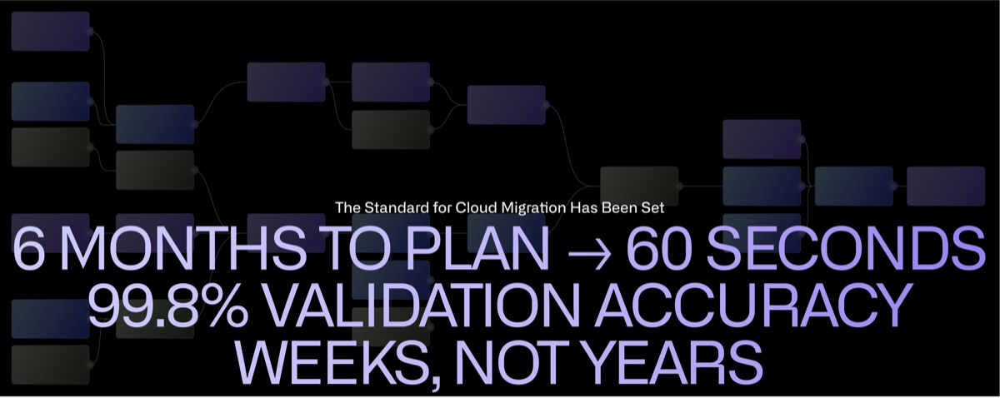
Accelerate Enterprise Data Migration
A New Paradigm For Operationalization
Palantir AIP Offers a Fundamentally Faster Approach
Generate rapid transformation across your entire data migration lifecycle.
Complete migrations, retire legacy systems, transition to cloud, and supercharge new workflows in months, not years, for a fraction of the price.
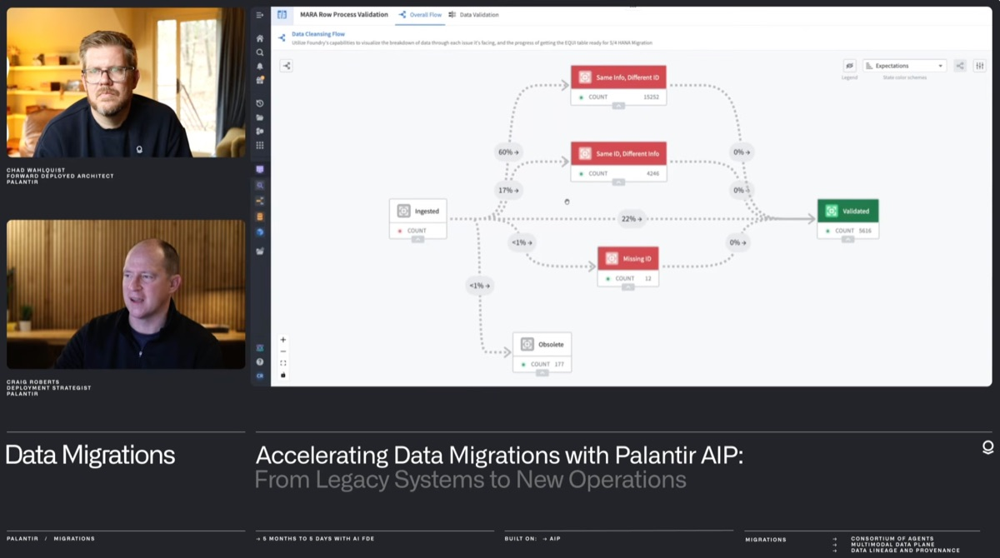
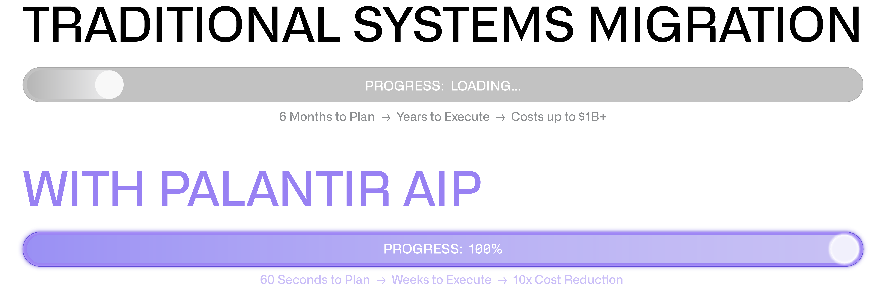
The Challenge with Traditional Data Migration
Enterprise migrations require extracting data from legacy systems (ERPs, SAP, etc.), interpreting custom code, transforming values, consolidating business units, and validating results against compliance requirements.
Traditional system integrators segment these responsibilities across different teams—each with their own tools, context, and limited visibility. When validation fails, organizations spend weeks tracing errors across silos.
The result: Years of costs, continued reliance on external integrators, slow transition to cloud, and consumed budgets.
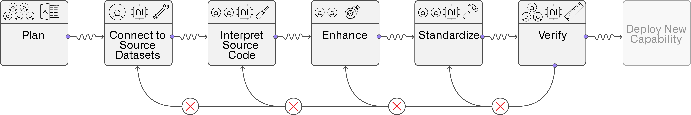
Transform Cloud Migration Cycles with Palantir AIP's Contextual Architecture
Palantir AIP maintains comprehensive context across the entire migration lifecycle. Like an octopus—independent arms with specialized processing, coordinated by a central brain—AIP deploys specialized AI at each migration stage while maintaining unified awareness of legacy structures, target requirements, business rules, and compliance standards.
The difference: When validation errors occur, the system immediately identifies the source, corrects it, and propagates fixes through the pipeline.
Eliminate validation loops. Get feedback in minutes, not weeks.
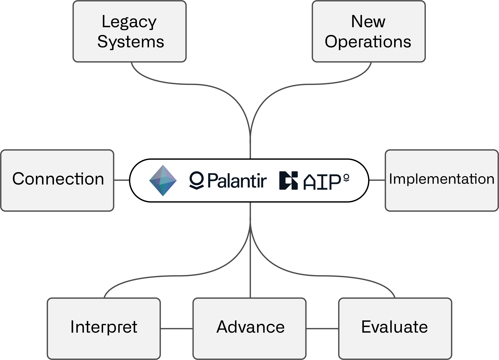
How it Works
Ingest & Understand
Palantir AIP ingests data dictionaries, legacy documentation, business requirements, and compliance frameworks simultaneously—understanding your environment in seconds, not months.
Query & Connect
AIP queries source databases directly, identifies table relationships, and constructs comprehensive data models automatically.
Synthesize & Streamline
AI-powered processes map legacy values to new standards, construct transformation logic, translate code, and prepare validated data for upload.
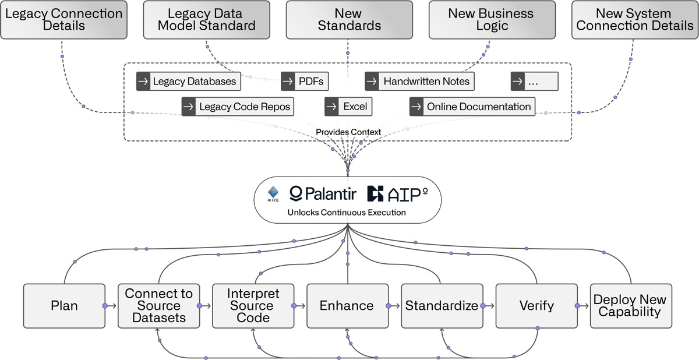
The New Standard for Cloud Migration Has Been Set
99.8% Validation Accuracy
Validation accuracy exceeded 96% within hours, reaching 99.8% within two weeks.
6 Months → 60 Seconds
Migration plans generated in 60 seconds. Execution begins immediately.
Weeks, Not Years
Complete data migration and legacy retirement in a fraction of traditional timelines.
The First Movers: Organizations Putting the New Standard into Practice
Legacy Codebase Rationalization: ERP Platform Selection & Migration
A leading technology services company needed to modernize its ERP. They hadn’t yet determined which platform to move to, and couldn't make that decision responsibly without first understanding what information it actually contained. The challenge: millions of lines of code, custom logic entangled with millions of live orders, and a data payload carrying years of unchecked debt.
Palantir conducted a rapid AI-driven assessment that brought immediate clarity. Of the millions of lines inventoried, roughly half of the rules were flagged for deprecation and thousands of separate rules were focused to just a couple hundred, eliminating millions of lines of technical debt before a platform decision was even made. AIP-powered workflows mapped all custom logic to live orders, enabling clean deprecation with zero business disruption. In tandem, a parallel data assessment cut migration volume by 60%+, massively decreasing overall GBs. That rationalized scope then fed directly into scenario modeling. By projecting the cost of migrating only what remains across candidate platforms, Palantir AIP enabled the client to make an informed, rational platform selection rather than committing to a target system blind.
A small team of the client's own engineers worked hands-on throughout the process, validating findings and owning high-risk areas directly. The client exited with a cleaner system plan, a deeper understanding of the true migration costs, and the internal capability to carry the work forward, regardless of which platform is chosen.
Multi-Market SAP ECC → S/4HANA Migration
A global food manufacturer faced a hard executive mandate: migrate 20+ markets across their global operations to SAP S/4HANA within 24 months. The traditional migration playbook of a rigid months-long linear process per market made that timeline structurally impossible. Decades of decentralized operations had left each country with its own data standards, payment terms, and business rules, with no global template and loss of institutional knowledge due to employee turnover.
Palantir convened with their tech and business team for an intensive 24-hour working session. Within hours, Palantir's AI FDE agent ingested raw ECC data, automatically generated S/4HANA-ready datasets, and inferred existing business rules directly from historical transaction data, bypassing weeks if not months of requirements-gathering workshops entirely. A validation engine cross-referenced thousands of sales orders with unmapped payment terms against a global catalog, creating an SME-workflow app that could prioritize task assignment, approvals, escalations, and audit trails, shifting human attention to exceptions only.
The result reframed the migration model: data is no longer the bottleneck. Parallel workstreams across markets replaced sequential country deployments, and a single comprehensive globally harmonized template took the place of bespoke per-country builds. Projected time to completion, total budget, and personnel time estimates were drastically reduced following this quick demonstration.
First Full AI-Run SAP Migration: Legacy SAP → S/4HANA
In two weeks, Palantir enabled the migration of 20,000+ location records from legacy SAP to S/4HANA. This was the first engagement to run the full migration lifecycle entirely through AI labor.
Palantir AIP ingested sprawling SAP PDFs and spreadsheets, automatically constructed data models, and built the transformation pipeline end-to-end. Every logical process, including remapping asset hierarchies after removing empty organizational nodes, was surfaced in a connected frontend with a comments section to ingest human input. SME feedback fed directly back into the pipeline, prompting AI FDE to execute targeted fixes with evaluations within minutes (not weeks). A clear load-sheet data readiness percentage gave the team a measurable mark to improve against, making the entire system self-correcting.
The key insight: Dynamically generated SME views allowed for continuous evaluation of the task. Show someone a spreadsheet, get spreadsheet-quality feedback. Show them an interactive hierarchy, get surgical, actionable feedback that agents can immediately act on.
SQL Migration at Scale: SQL Server → PySpark
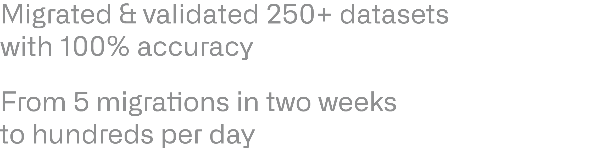
A major retailer had hundreds of interdependent, long, and complicated SQL Server queries powering its reporting infrastructure. The complexity and interdependency presented a nearly insurmountable challenge that stretched back over the past decade, yet it all needed to move.
Palantir built a pipeline that performed static analysis on the SQL to generate a full dependency graph, then dispatched parallel AI FDE tasks, each running in its own automated browser instance, to interpret, recode, build, and verify each dataset autonomously. The result: every one of their 250+ datasets were migrated and validated with 100% accuracy. More than tens of thousands of lines of SQL were converted into transparent PySpark. For a less than $4k AI token cost investment, the customer was able to move from 5 migrations in two weeks to hundreds per day.
This swarm of dozens of agents were executing in parallel against a structured task graph, with careful investment in orchestration. Plan/act modes, dynamic prompt templates, multi-model coordination, and memory management were all working together to find the repeatable build path that scales.
Achieve Deep Operational Intelligence
The impact extends beyond migration
Continue Exploring
SAP Partnership 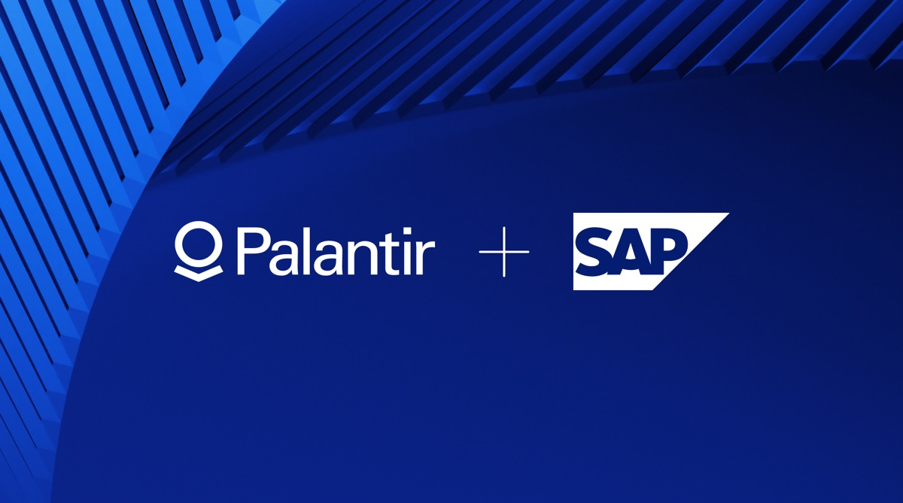
Explore the PartnershipPalantir and SAP are accelerating the path to cloud for mission-critical systems and unlocking the new era of AI capabilities.
Video 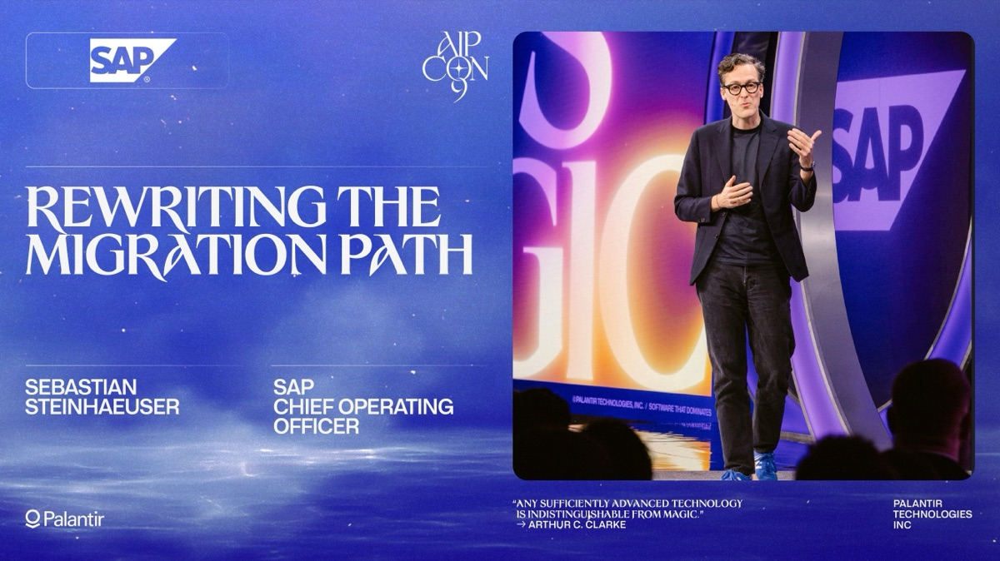
Watch the VideoSebastian from SAP reveals how Palantir's AI agents are fundamentally rewriting the path to SAP in the cloud—collapsing migrations from months to weeks, reducing costs dramatically, and delivering business value from day one.
Video 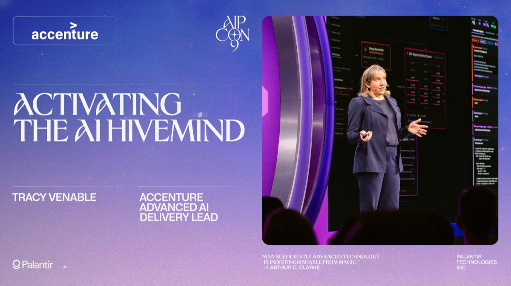
Watch the VideoAdvanced AI Delivery Lead Tracy Venable reveals how Accenture and Palantir are working together to transform enterprise consulting to compress ERP migrations from months to weeks, deliver business value from day one, & more.
Video 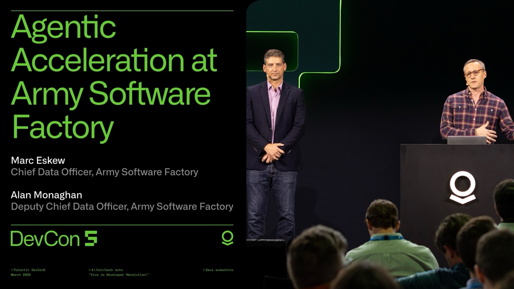
Watch the VideoAt DevCon 5, Chief Data Officer Marc Eskew and Deputy Chief Data Officer Alan Monaghan from Army Software Factory reveal how a migration that should have taken months was completed in days with AI FDE.
Demo 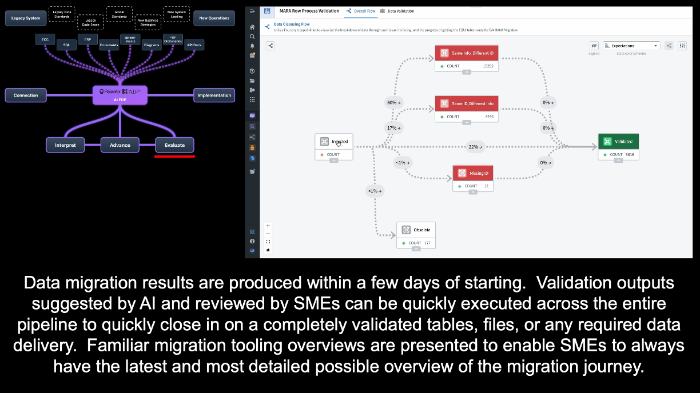
Watch the VideoWatch how Palantir AIP is enabling organizations to move beyond legacy systems and rapidly migrate to new platforms and structures, drive maximally efficient operations, and create real outcomes.
Blog 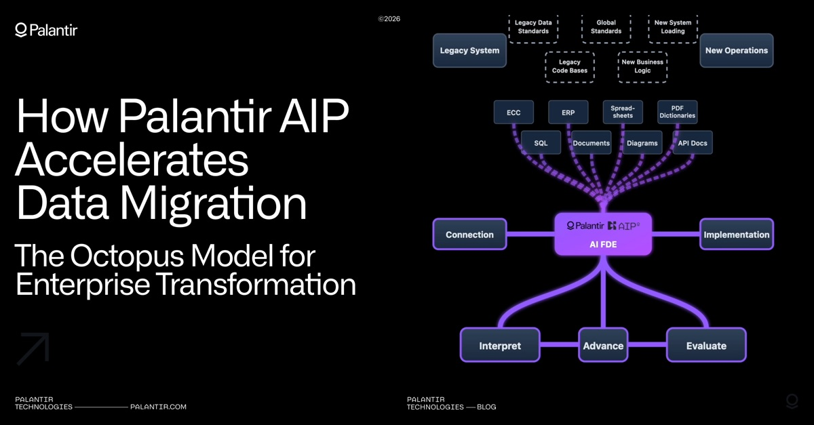
Read the BlogEnterprise data migration can be among the most costly, complex, and time-consuming endeavors organizations undertake. Read how Palantir AIP transforms the traditional approach.
Video  Watch the Video
Watch the VideoWatch Chris Simpson, Director, Data, Strategy & Analytics at Lear, and Stephen Ecker, VP of Data & Analytics at Trinity Industries, share how they're building agentic enterprises with AI FDE.
Whitepaper 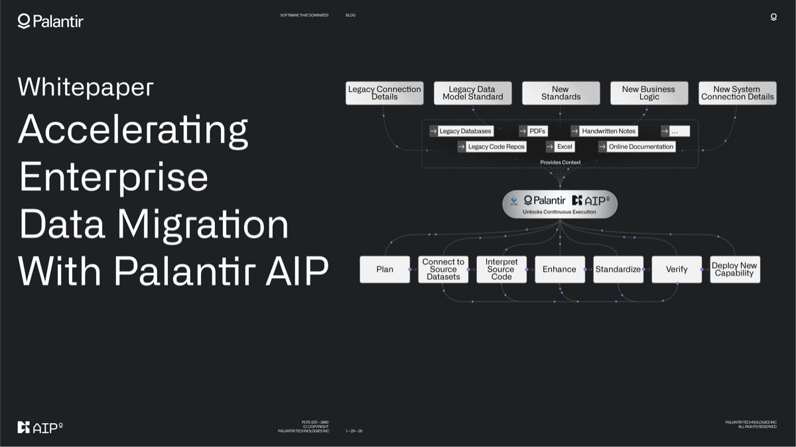
Read the WhitepaperCompetitive advantage increasingly depends on the speed and accuracy of data-driven decisions. In this whitepaper, you learn how Palantir AIP transforms migration from a burden into a strategic accelerator.
Video  Watch the Video
Watch the VideoWatch Palantir Software Engineer Ankit Shankar unveil the AI Forward Deployed Engineer — an agentic system that can build data transformations, create & edit Ontologies, create functions, build entire applications, & more.
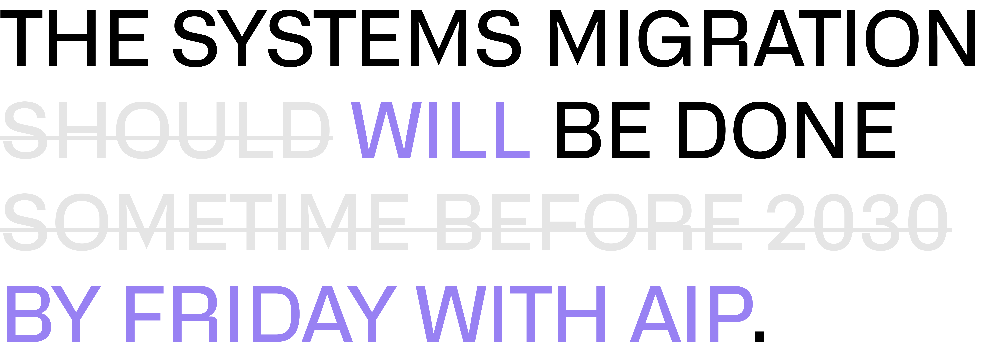